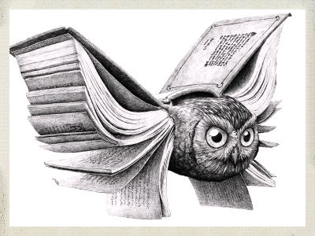

|  |
Умение рисовать позволит вам воплотить в жизнь большенство своих идей |
|
Пол дела почти сделано
|
|
Детализация безликого наброска самое интересное в процессе рисованя.
4 ШАГ:Разметка деталейна этом шаге нужно разметить:
5 ШАГ:Прорисовка одеждыЭтот этап необязательно выполнять именно сейчас
5.1 ШАГ:прорисовка мелких деталейОт деталей зависит многое
По сути рисунок становится чем то большим нежели наброском |
|
|
Курс Web-дизайн © Такташов Егор
web-мастер: egorka-1999@bk.ru |
|